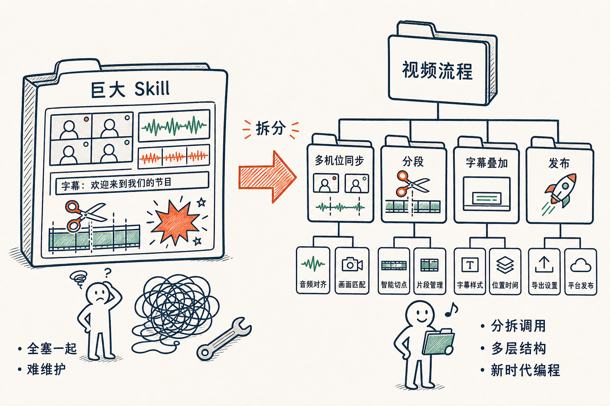

如果把 Skill 当做 AI 开发的基础模块，SKILL.md 当做入口，一个 SKILL 类似于以前的一个函数（function）。
我写了一阵子的 skill 以后，发现原来写代码的时候，代码无法维护的问题又在新的层次出现了。
比如开始处理视频，写了个很大的 /video-process skill，结果把多机位音频同步，合并，切换镜头，和后面的配字幕，以及分小段，到增加 Hyperframes 的动画等等一股脑写在一个 skill 里面。
这不是刚开始学习写程序的时候一个巨大的几千行的 main（）函数的做法吗？

之后尝试把大 Skill 分拆成独立的明确的小 skill，比如 /video-multicam /video-segmentation /video-overlay /video-publish，其中每一个再调用更多的 skill 的立体的结构，就开始变得稍微好维护一些。
结果很快的这些 skills 就变成了一个有很多层次的文件夹，这样子，新时代编程的感觉就慢慢来了。